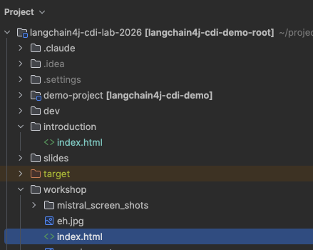

LangChain4j-CDI
IA générative
Nativement injectable dans Jakarta EE
Yann Blazart, Emmanuel Hugonnet & Antoine Sabot-Durand
Devoxx France 2026 — Atelier pratique
⚠️
Avertissement
Cette présentation a été honteusement générée avec l'aide de l'IA.
Ne vous inquiétez pas, les intervenants sont réels.
Enfin... nous n'avons pas encore vérifié avec un CAPTCHA.
Aucun développeur Jakarta EE n'a été blessé pendant la production de ces diapositives. Mais nous ne parlerons pas des batailles vikings ⚔️
Le LLM, cependant, a fait 247 tentatives.
Qui suis-je ?

Yann Blazart
25+ ans en Java • Passionné de CDI • Co-créateur de langchain4j-cdi
Orateur à mes heures perdues (et quand on veut bien de moi)
Jakarta EE CDI LangChain4j
Tech Lead @ SCIAM — Conseil et expertise IT
Mon copilote

Emmanuel Hugonnet (ehsavoie)
25+ ans en Java • Développeur • Co-créateur de langchain4j-cdi
Développeur core WildFly
WildFly Apache NetBeans LangChain4j A2A Java SDK
Et le spec lead historique de CDI
Antoine Sabot-Durand
Java Champion • Ex spec lead CDI (Jakarta EE) • Ex-Red Hat
Équipe de lancement Quarkus • MicroProfile Fault Tolerance & Health Check
CDI Jakarta EE Quarkus MicroProfile
Directeur Technique @ SCIAM — collègue de Yann
À nous trois, bien plus de 75 ans d'expérience Java cumulés. Nous sommes vraiment des Technosaures maintenant. 🦕🦕🦕
Le contexte aujourd'hui
Vous avez peut-être vu :
LangChain4j + 🃏 Quarkus = 🤖 Chatbot intelligent
Mais en production, vous avez :
Alors maintenant quoi ? 🤔
La réponse :
@RegisterAIService
CDI fait le pont entre LangChain4j et votre serveur
« Injectez un agent IA aussi naturellement qu'un EntityManager »
Programme de l'atelier
@RegisterAIService, streaming, vision multimodale
@Retry, @CircuitBreaker, OpenTelemetry
Chaque exercice a un squelette base/ et une référence solution/ — travaillez à votre rythme.
Récupérer le code

Ouvrez l'index.html du workshop avec votre navigateur préféré.